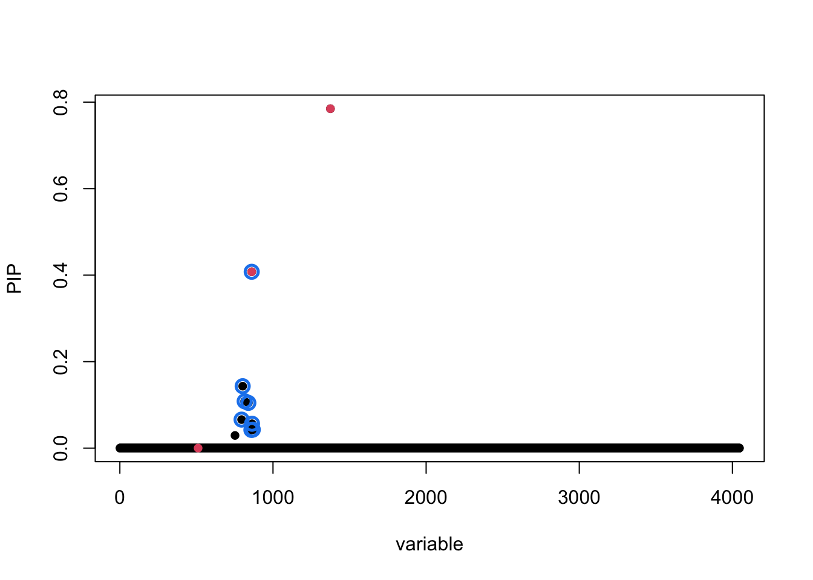
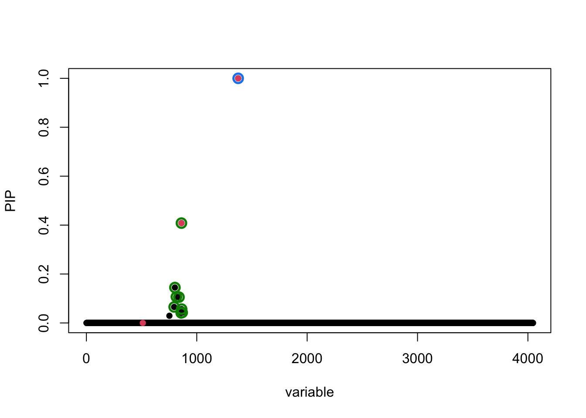
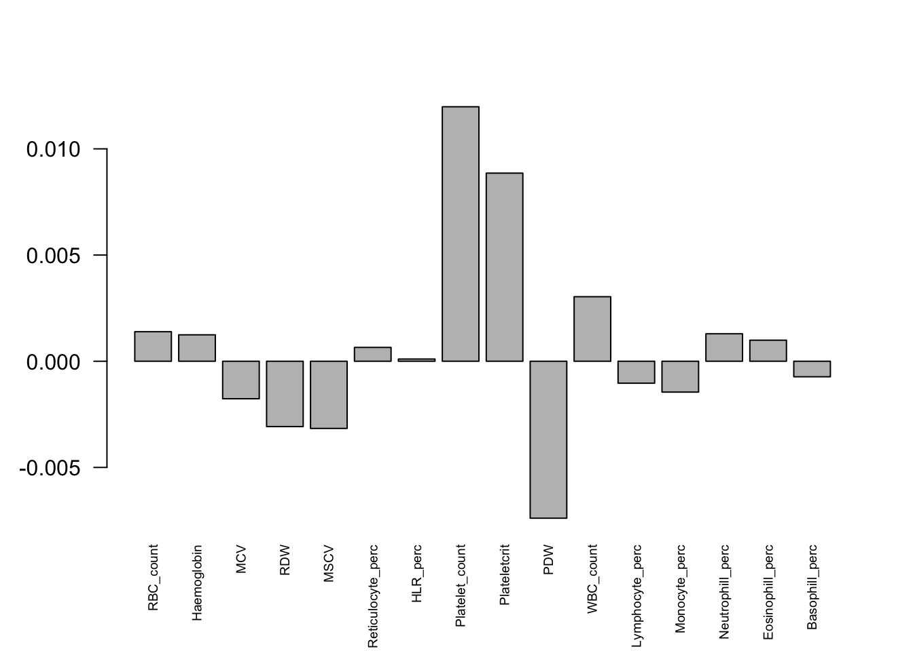
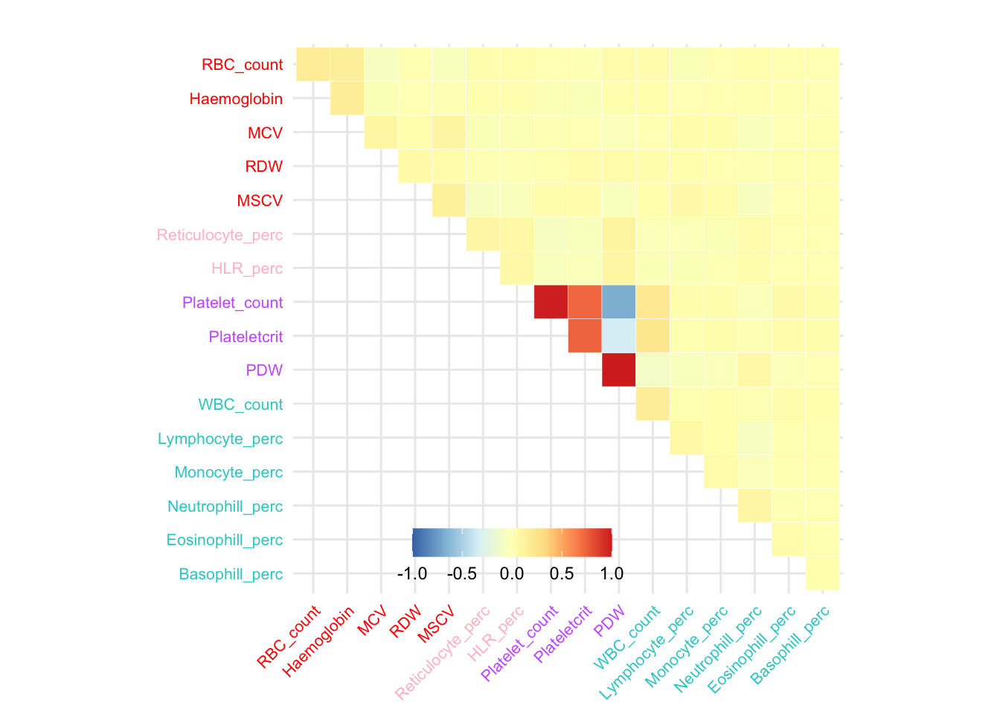

Last updated: 2022-07-21
Checks: 7 0
Knit directory: mmbr-rss-dsc/
This reproducible R Markdown analysis was created with workflowr (version 1.7.0). The Checks tab describes the reproducibility checks that were applied when the results were created. The Past versions tab lists the development history.
Great! Since the R Markdown file has been committed to the Git repository, you know the exact version of the code that produced these results.
Great job! The global environment was empty. Objects defined in the global environment can affect the analysis in your R Markdown file in unknown ways. For reproduciblity it’s best to always run the code in an empty environment.
The command set.seed(20200227) was run prior to running
the code in the R Markdown file. Setting a seed ensures that any results
that rely on randomness, e.g. subsampling or permutations, are
reproducible.
Great job! Recording the operating system, R version, and package versions is critical for reproducibility.
Nice! There were no cached chunks for this analysis, so you can be confident that you successfully produced the results during this run.
Great job! Using relative paths to the files within your workflowr project makes it easier to run your code on other machines.
Great! You are using Git for version control. Tracking code development and connecting the code version to the results is critical for reproducibility.
The results in this page were generated with repository version f42a9d2. See the Past versions tab to see a history of the changes made to the R Markdown and HTML files.
Note that you need to be careful to ensure that all relevant files for
the analysis have been committed to Git prior to generating the results
(you can use wflow_publish or
wflow_git_commit). workflowr only checks the R Markdown
file, but you know if there are other scripts or data files that it
depends on. Below is the status of the Git repository when the results
were generated:
Ignored files:
Ignored: .Rhistory
Ignored: .Rproj.user/
Ignored: analysis/figure/
Untracked files:
Untracked: data/analysis_20220619/
Untracked: output/analysis_20220619/
Note that any generated files, e.g. HTML, png, CSS, etc., are not included in this status report because it is ok for generated content to have uncommitted changes.
These are the previous versions of the repository in which changes were
made to the R Markdown
(analysis/ukb_bllodcells_20220619_ukb_cannonicalvsrandom.Rmd)
and HTML
(docs/ukb_bllodcells_20220619_ukb_cannonicalvsrandom.html)
files. If you’ve configured a remote Git repository (see
?wflow_git_remote), click on the hyperlinks in the table
below to view the files as they were in that past version.
| File | Version | Author | Date | Message |
|---|---|---|---|---|
| Rmd | f42a9d2 | Yuxin Zou | 2022-07-21 | wflow_publish("analysis/ukb_bllodcells_20220619_ukb_cannonicalvsrandom.Rmd") |
library(mvsusieR)Loading required package: mashrWarning: package 'mashr' was built under R version 4.1.2Loading required package: ashrLoading required package: susieRlibrary(reshape2)
library(ggplot2)
plot_sharing = function(X, col = 'black', to_cor=FALSE, title="", remove_names=F) {
clrs <- colorRampPalette(rev(c("#D73027","#FC8D59","#FEE090","#FFFFBF",
"#E0F3F8","#91BFDB","#4575B4")))(128)
if (to_cor) lat <- cov2cor(X)
else lat = X/max(diag(X))
lat[lower.tri(lat)] <- NA
n <- nrow(lat)
if (remove_names) {
colnames(lat) = paste('t',1:n, sep = '')
rownames(lat) = paste('t',1:n, sep = '')
}
melted_cormat <- melt(lat[n:1,], na.rm = TRUE)
melted_cormat$Var2 = as.factor(melted_cormat$Var2)
melted_cormat$Var1 = as.factor(melted_cormat$Var1)
p = ggplot(data = melted_cormat, aes(Var2, Var1, fill = value))+
geom_tile(color = "white")+ggtitle(title) +
scale_fill_gradientn(colors = clrs, limit = c(-1,1), space = "Lab") +
theme_minimal()+
coord_fixed() +
theme(
axis.title.x = element_blank(),
axis.title.y = element_blank(),
axis.text.x = element_text(color=col, size=8,angle=45,hjust=1),
axis.text.y = element_text(color=rev(col), size=8),
title =element_text(size=10),
# panel.grid.major = element_blank(),
panel.border = element_blank(),
panel.background = element_blank(),
axis.ticks = element_blank(),
legend.justification = c(1, 0),
legend.position = c(0.6, 0),
legend.direction = "horizontal")+
guides(fill = guide_colorbar(title="", barwidth = 7, barheight = 1,
title.position = "top", title.hjust = 0.5))
if(remove_names){
p = p + scale_x_discrete(labels= 1:n) + scale_y_discrete(labels= n:1)
}
return(p)
}In simulation with UKB blood cell traits priors, the random effect prior performs slightly better than canonical prior.
Load simulated data
dat = readRDS('data/analysis_20220619/data_ukb_609_ukb_bloodcells_mixture_2.rds')
meta = dat$metaThere are 3 causal variants.
Load the model using canonical prior
m_can = readRDS('data/analysis_20220619/data_ukb_9_ukb_bloodcells_mixture_1_mnm_rss_naive_corZ_1.rds')
susie_plot(m_can$result, y='PIP', b = meta$true_coef)
Load the model using random effects prior
m_ran = readRDS('data/analysis_20220619/data_ukb_9_ukb_bloodcells_mixture_1_mnm_rss_identity_corZ_1.rds')
susie_plot(m_ran$result, y='PIP', b = meta$true_coef)
The variant 1375 has PIP 0.78 using canonical prior, PIP 0.99 using random effects prior. The true effect of variant 1375 is
rename = list('WBC_count' = 'WBC#',
'RBC_count' = 'RBC#',
'Haemoglobin' = 'HGB',
'MCV' = 'MCV',
'RDW' = 'RDW',
"Platelet_count" = 'PLT#',
"Plateletcrit" = 'PCT',
"PDW" = 'PDW',
"Lymphocyte_perc" = 'LYMPH%',
"Monocyte_perc" = 'MONO%',
"Neutrophill_perc" = 'NEUT%',
"Eosinophill_perc" = 'EO%',
"Basophill_perc" = 'BASO%',
"Reticulocyte_perc" = 'RET%',
"MSCV" = 'MSCV',
"HLR_perc" = 'HLR%')
trait_names = sapply(colnames(meta$residual_variance), function(x) rename[[x]])
bloodcells_col = cbind(trait_names,
c('Compound white cell', 'Mature red cell', 'Mature red cell',
'Mature red cell', 'Mature red cell', 'Platelet', 'Platelet',
'Platelet', 'Compound white cell', 'Compound white cell',
'Compound white cell', 'Compound white cell', 'Compound white cell',
'Immature red cell', 'Mature red cell','Immature red cell'),
c('#33cccc', 'red', 'red', 'red', 'red',
'#cc66ff', '#cc66ff', '#cc66ff',
'#33cccc', '#33cccc', '#33cccc', '#33cccc', '#33cccc',
'pink', 'red', 'pink'))
trait_new_order = c("RBC#", "HGB", "MCV", "RDW", "MSCV", "RET%", "HLR%", "PLT#", "PCT", "PDW",
"WBC#", "LYMPH%", "MONO%", "NEUT%", "EO%", "BASO%")
traits_index = match(trait_new_order, trait_names)
colnames(meta$true_coef) = colnames(meta$residual_variance)
barplot(meta$true_coef[1375,traits_index], las = 2, cex.names=0.6) It is simulated from this covaraince structure
plot_sharing(meta$trueU$`1375`[traits_index, traits_index], col=bloodcells_col[traits_index,3]) Warning: Vectorized input to `element_text()` is not officially supported.
Results may be unexpected or may change in future versions of ggplot2.
Vectorized input to `element_text()` is not officially supported.
Results may be unexpected or may change in future versions of ggplot2.
The posterior weights for each component in canonical prior is
w = m_can$result$mixture_weights[2, 1375,]
names(w) = c('null', names(meta$prior$naive$xUlist))
round(w, 4) null singleton_1 singleton_2 singleton_3 singleton_4 singleton_5
0.0000 0.0000 0.0000 0.0000 0.0000 0.0000
singleton_6 singleton_7 singleton_8 singleton_9 singleton_10 singleton_11
0.0015 0.0000 0.0000 0.0000 0.0001 0.0001
singleton_12 singleton_13 singleton_14 singleton_15 singleton_16 shared_1
0.0236 0.0000 0.0000 0.0000 0.0000 0.5148
shared_2 shared_3 shared_4 shared_5
0.2985 0.1380 0.0233 0.0000
sessionInfo()R version 4.1.0 (2021-05-18)
Platform: x86_64-apple-darwin17.0 (64-bit)
Running under: macOS Big Sur 10.16
Matrix products: default
BLAS: /Library/Frameworks/R.framework/Versions/4.1/Resources/lib/libRblas.dylib
LAPACK: /Library/Frameworks/R.framework/Versions/4.1/Resources/lib/libRlapack.dylib
locale:
[1] en_US.UTF-8/en_US.UTF-8/en_US.UTF-8/C/en_US.UTF-8/en_US.UTF-8
attached base packages:
[1] stats graphics grDevices utils datasets methods base
other attached packages:
[1] ggplot2_3.3.6 reshape2_1.4.4 mvsusieR_0.0.3.0518
[4] susieR_0.12.07 mashr_0.2.57 ashr_2.2-54
[7] workflowr_1.7.0
loaded via a namespace (and not attached):
[1] Rcpp_1.0.8.3 invgamma_1.1 mvtnorm_1.1-3 lattice_0.20-44
[5] prettyunits_1.1.1 getPass_0.2-2 ps_1.7.0 assertthat_0.2.1
[9] rprojroot_2.0.3 digest_0.6.29 utf8_1.2.2 truncnorm_1.0-8
[13] R6_2.5.1 plyr_1.8.7 evaluate_0.15 highr_0.9
[17] httr_1.4.3 pillar_1.7.0 progress_1.2.2 rlang_1.0.2
[21] rstudioapi_0.13 irlba_2.3.5 whisker_0.4 callr_3.7.0
[25] jquerylib_0.1.4 Matrix_1.3-3 rmarkdown_2.14 labeling_0.4.2
[29] stringr_1.4.0 munsell_0.5.0 mixsqp_0.3-43 compiler_4.1.0
[33] httpuv_1.6.5 xfun_0.30 pkgconfig_2.0.3 SQUAREM_2021.1
[37] htmltools_0.5.2 tidyselect_1.1.2 tibble_3.1.7 matrixStats_0.62.0
[41] reshape_0.8.9 fansi_1.0.3 withr_2.5.0 crayon_1.5.1
[45] dplyr_1.0.9 later_1.3.0 grid_4.1.0 DBI_1.1.2
[49] jsonlite_1.8.0 gtable_0.3.0 lifecycle_1.0.1 git2r_0.30.1
[53] magrittr_2.0.3 scales_1.2.0 cli_3.3.0 stringi_1.7.6
[57] farver_2.1.0 fs_1.5.2 promises_1.2.0.1 bslib_0.3.1
[61] ellipsis_0.3.2 vctrs_0.4.1 generics_0.1.2 cowplot_1.1.1
[65] rmeta_3.0 tools_4.1.0 glue_1.6.2 softImpute_1.4-1
[69] purrr_0.3.4 hms_1.1.1 processx_3.5.3 abind_1.4-5
[73] fastmap_1.1.0 yaml_2.3.5 colorspace_2.0-3 knitr_1.39
[77] sass_0.4.1